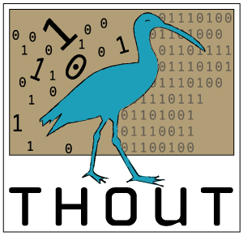

Thout 1.0 Test Book
by Gary Varnell
© 2006 Osoft Inc. All rights reserverd
This document is a test file to help assure that all Thout 1.0 book capabilities are handled properly in the new reader.
All Thout 1.0 capabilities should be included in this document.
Gary Varnell
© Osoft.inc 2004-2005 all Rights Reserved
This document was created for internal test usage only.
.
This is a level 1 node
parent=book
This is a level 2 node
parent=level_1_node
This is a level 3_node
parent=level_2_node
The following nodes test various html content types
The following text should be pre formatted in the display
if($0 eq ($ENV{PAR_ARGV_0} || __FILE__)) {
my $app = MainApp->new();
$app->MainLoop();
}
You should see a gif image below
You should see a png image below
If png images are handled properly, the background should be transparent.
external: http://www.dotreader.com
internal: level_1_node
internal2: pkg://level_1_node
internal3: pkg://thout1_test/level_1_node
mail: mailto:gvarnel@osoft.com
todo-add other protocals such as cross book and ftp
The following test the various node attributes such as:
The icon int the TOC should change for this node based on whether the node is open or closed
the next item should have a different leaf icon.
render=false
This text should not appear because it is in a render = false node
render_false_child1 This is the first child node of the render_false node
render_false_child2 This is the second child node of the render_false node
visible=false
This node should not render in the TOC navigation tree
This is the first child of the visible = false node
This is the second child of the visible = false node
This nodes children should not be rendered when clicking on this node.
The nodes should however be displayed in the navigation tree, and their content should display
when they are clicked.
this is the content for render_children_false_child_1 - hopefully you clicked on this node and not render_children_false if you are seeing this!
this is the content for render_children_false_child_2 - hopefully you clicked on this node and not render_children_false if you are seeing this!
this is the content for render_children_false_child_3 - hopefully you clicked on this node and not render_children_false if you are seeing this!
This text should not show up when you click the showpage="about" link in the toc
http://www.dotreader.com - external html link
ftp://ftp.freebsd.org/pub/FreeBSD/doc/ - ftp link
about - internal link
mailto:gary@2dgs.com - mailto link
BEGIN {
# XXX stupid hack for now. needs to tee/log/etc
if($PerlWrapper::BundlePath) {
open(STDERR, '>', "/tmp/thout.$$.err");
select STDERR; $| = 1;
$SIG{__DIE__} = sub {
warn $_[0];
die $_[0];
}
}
}
# XXX why is this an ENV var? --Eric
# set par temp to data dir if it doesn't exist
$ENV{'Thout_lib'}='';
if ($ENV{'PAR_TEMP'}){
$ENV{'Thout_lib'} = $ENV{'PAR_TEMP'}.'/inc/';
}
source code image / text example using render = false and showpage
This technique is currently used for books that have complicated source code markup such as arrows and symbols.
An image is shown by default, but clicking on copy displays the hidden text.
We also use this technique to show code with line numbers that are not rendered in the copy pane.